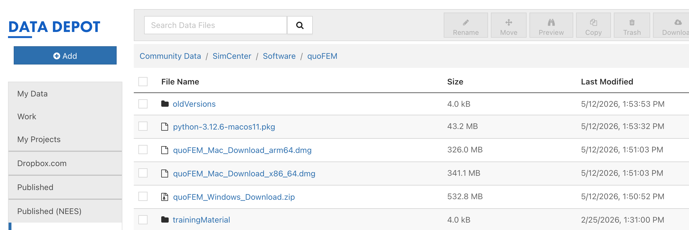

1.1.2. Install on MacOS¶
1.1.2.1. Install Python¶
The quoFEM app requires Python be installed on your machine and that the version of it be in the 3.10 – 3.12 range.
To check what you have, open Terminal (Spotlight: ⌘+Space, type “Terminal”, press Enter) and run:
python3 --version
If it reports a 3.10, 3.11, or 3.12 number, you’re set and can go to the next step. If not, you need to install an appropriate version. We recommend 3.12.
To Install Python 3.12
Go to the tool download page (link: quoFEM Download). On the browser page that this brings up, you will find various files and directories available for download. Locate the file named python-3.12.6-macosx11.pkg, which we copied from Python.org. Proceed to download this installer file.
Locate this installer file in your Downloads folder, and double click on it to start the installation process. Upon completion, a folder with several files will open, as shown in the figure below. Execute
Update Shell Profile.command.shandInstall CertificateCommand.shby double-clicking each.
Fig. 1.1.2.1.1 Python: Folder Displayed at Conclusion of Install¶
Repeat the first python version check above in a
NEWterminal window.
Note
If you still have the incorrect version of python installed after following the above steps, it probably means you forgot to invoke the Update Shell Profile Command.command script at the end of step 2. You can still do it using Finder. Open Finder and navigate to the /Applications/Python 3.12 folder. Here you will see a number of files, including the two you forgot to run: Install Certificates Command.command and Update Shell Profile Command.command. Double click on these files to run them. Finally open a NEW terminal again and check your version of python.
1.1.2.2. Optional: Create a Python Environment¶
If you have a current version of Python that meets the requirements (3.10, 3.11 or 3.12) and want to re-use it, or if you will be using additional SimCenter applications, we strongly recommend creating a python virtual environment. This is in case the pip install command you are about to issue, downloads and installs python packages that don’t mix with your current ones or ones you will need in the future. To create a python environment for quoFEM app, issue the following in the terminal window:
cd ~ mkdir python_env cd python_env python3 -m venv python-quoFEM source ./python-quoFEM/bin/activate
Note
These commands create a folder in your home directory named python_env, instruct the current default python interpreter to create a directory for a virtual environment named python-{short tool id| in this folder, and from the many files in this new folder that are present, you invoke a script activate that sets up the terminal environment such that it uses the python interpreter you created the environment with and, most importantly, will install python packages into this folder.
1.1.2.3. Install Python Modules¶
In the terminal window you have opened, you need to issue the following 2 commands to ensure the command line tools for x-code and some additional python modules are installed:
xcode-select --install
python3 -m pip install --upgrade "nheri_simcenter[quofem]"
1.1.2.4. Note Your Python Path¶
quoFEM app needs the full path to the Python interpreter. Find it with the which command in Terminal.
which python3
If you are using the newly installed python without a virtual environment you should see something like /Library/Frameworks/Python.framework/Versions/3.12/bin/python3. If using a python environment: /Users/YOUR_LOGIN/python_env/python-quoFEM/bin/python3. Copy this path to your clipboard.
Note
When the application is actually running, you will need to change the location of the python application that will run if you are using a virtual environment or if the existing python interpreter you are using is in a different location. To do this, in the top menu bar, under the tool icon select Preferences (on some macOS versions it is Settings). Change the location of python, the first variable you can edit, to the python3 path noted, e.g. /Users/YOUR_LOGIN/python_env/python-quoFEM/bin/python3. Finally press the Save button. Please note that YOUR_LOGIN needs to be replaced with your actual login!
1.1.2.8. Download the Application¶
To download the quoFEM app, navigate to the quoFEM Download page which should resemble Fig. 1.1.2.8.5. The download page contains a list of downloadable files and directories. Two macOS build are listed |tool app id|_MacOS_Download_arm64.dmg, for Apple Silicon Macs (chips named M1, M2, M3, **M4*, and M5) and |tool app id|_Mac_Download_x86_64.dmg for older INtel-based Macs.
Note
To check which you have: click the Apple menu in the top-left corner of your screen and choose About This Mac. Look at the Chip (o**Processor**) line. If it starts with “Apple”, you want the arm64 download. If it says “Intel”, you want the x86_64 download. If you pick the arm64 build on an Apple Silicon Mac, quoFEM runs natively and is significantly faster than under emulation. The arm64 build will not run on an Intel based Mac.
{kind=link}

Fig. 1.1.2.8.5 quoFEM download page.¶
Click on the appropriate file link in the pop-up window, then click on the Download button in the bottom right corner. After the download is completed, open the dmg file and copy the quoFEM to a location in your filesystem.
Note
We suggest copying the application either the Applications folder or your Desktop. After copying the application, you can move the dmg file to the trash or eject it.
1.1.2.9. Test the Installation¶
Once the installation procedure has been completed, it is a good practice to run some basic checks. Navigate to the location where you placed the application and open it by double-clicking the quoFEM application.
Note
SimCenter apps are code-signed and notarized, but because they are not downloaded from the Apple app store, they will not be recognized as safe applications. Depending on your security settings, when you start a SimCenter app for the first time, your operating system may show a dialog box indicating it is unsafe. If this dialog appears, choose the cancel button. Try to start the app again, this time by right-clicking on it and selecting open.
If the app still fails to open. You need to go to System Settings->Privacy and Security. Under the Security section, you need to at least temporarily select the option to allow applications downloaded from the App Store and Identified Developers. With this checked try again. If it fails again, go back to System Settings->Privacy and Security. Just below the section you just checked, there should be some text about why the app was stopped and an option to Open Anyway, as shown in the figure below. Click on the button and the app should start.

Once the application starts, verify the setup by running an example problem Two-Dimensional Truss: Sampling, Reliability and Sensitivity, see Fig. 1.1.2.9.5.

Fig. 1.1.2.9.5 quoFEM application on startup.¶
Note
When the quoFEM app is running, open the app/preferences or File/Preferences and make sure that python3 appears under External Applications:Python, as shown in the figure below. If you used older versions of SimCenter tools this was not the default. The exact location of Python3 that you installed can be found by opening the terminal application and executing the which python3 command. Enter the path shown as a response in the Preferences panel under Python and then press the Save button.

Fig. 1.1.2.9.7 Set Python Preferences.¶